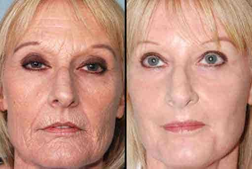

DŮLEŽITÉ Revoluční vynálezce v boji proti vráskam s třemi nositeli Nobelovy ceny nominovaný

Klinické studie profesora Tibora Németha prokázaly, že pomáhá odstraňovat vrásky a suchou, ochablou pokožku a účinně odstaňuje až 15 let z našeho věku.
Než se ponoříme do detailů, podívejme se blíže na výsledky tohoto nepředstavitelného objevu. 54-letá ženská kůže byla biochemicky omlazována o tři desetiletí díky sérii experimentů. Abych to zopakoval, 54-letá kůže je v současné době stejná jako tá 24-leté ženy. Biologický věk další 34-leté ženy je totožný s věkem 22-23-leté ženy.
Na první pohled se tyto výsledky mohou jevit jako unáhlené, možná až příliš optimistické, pokud uvažujeme v rámci současném vědy. To je místo, kde přichází obraz, nicméně, účinek kolagenu na DNA kožních buněk, zejména na epidermu a pokožku (dvě horní vrstvy kůže). Zdá se, že věda konečně našla způsob, jak překonat vrásky a dokonce dokáže zvrátit proces stárnutí.
(Patricie Velká, Budapešť) Na historické tiskové konferenci bylo oznámeno, že se americký profesor narodil v maďarsku. Nová metoda péče o pleť byla založena na objevu profesora Németha, který použil tři další nositele Nobelovy ceny biologie a chemie: Eirika Albertssona, Nadana Peterssona a Yukka Fieberga.
byl testován v laboratorních podmínkách u více než 800 subjektů. Výsledky byly úžasně působivé: kůže každé zúčastněné ženy byla výrazně omlazena (ve věkové kategorii 25–72 let). V průměru se jejich pokožka omlazuje o 5-25 let za pouhých 4-6 týdnů. ANO, TOHLE JSOU SKUTEČNÉ VÝSLEDKY! Vraťme se ale zpět k rozhovoru. Profesor Németh si pozval na pódium ženu ve svých třicátých letech, která svou občankou prokázala svůj skutečný datum narození. Novináři jsou v šoku! Narodila se v roce 1967 a bylo jí 54 let.
Vypadalo to, jako by se její kůže úplně změnila.
Po pozdravu hovořil profesor Németh o typických známkách stárnutí, které zažívají všechny ženy ve věku 25 let. Patří sem podlitiny, zejména mezi očima a obočím, výskyt linií úsměvu na ústech a nosu, uvolnění a vysušování krku a obličeje. Poté profesor s různými dokumentujícími důkazy představil neobvyklé omlazení kůže Julie.
Po představení inovativního produktu - bílého krému ve stylové láhvi - si profesor Juliet produkt opatrně aplikovala na obličej, bez výrazného pohybu, nebo masírování. Bílý krém se okamžitě vstřebal do kůže. Juliina tvář vypadala svěžejší již za několik sekund. Tvář 54 leté ženy byla stejně hladká jako ta novorozence. Účinek krému na celou tvář byl, jako bychom se dívali na účinek injekci Botoxu, ale na rozdíl od vpychované formuli je tento produkt zcela zdravý a přirozený.
Na konci představení Juliina pokožka téměř vyzařovala mládí. Kdybych neviděl, jak stará byla,
neuvěřila bych, že jí je skutečně 54. A bez fotografických důkazů bych si nikdy nemyslela, že někdy
měla suchou nebo poškozenou kůži. Vypadala alespoň o jednu generaci mladší.
Můžete si představit naše překvapení, byli jsme svědky skutečného zázraku, ale byl to zázrak
vědy, nikoli sci-fi.
Změna, kterou jste viděli, může být pro některé zázrakem, ale pro nás vědce je to prostě naprosto pochopitelná reakce. Řekl profesor Németh. "Celý jev je založen na jedinečných historických objevech, které byly postaveny na desetiletích laboratorních experimentů a stovkách pokusů a testů." dodává profesor. „Světově proslulí vědci, kteří získali i Nobelovu cenu, našli způsob, jak upravit DNA buněk pokožky. Jsou to jejich zásluhy, nikoli moje. Tento objev byl učiněn jejich úsilím a láskou k vědě.“ zdůrazňuje profesor. S věkem začínají žlázy a svaly kůže vysychat, ztrácí pevnost, pružnost a tvoří se vrásky a linie. Kůže tak ztrácí lesk a vitalitu.
Co způsobuje stárnutí kožních buněk? Na rozdíl od reklam kosmetiček to není jenom jednoduchá dehydratace, ale něco mnohem důležitějšího. Buňky se časem zapomínají „krmit“, nemohou se napít a tak pomalu umírají. Tento jev jsme objevili teprve nedávno. Objevem je, že vědci úspěšně syntetizovali "kolagen" - biologicky - speciální protein, který pomáhá "pamatovat" a nutí DNA pokožky regenerovat se a znovu se "hydratovat".
Můžeme změnit povahu naší kůže?
Je to až příliš dobré na to, aby to byla pravda? Ano, překvapivé a těžko uvěřitelné, i já jsem si prošla stejnými fázemi poté, co jsem to všechno zažila. Medicína skutečně prokázala, že s pomocí nedávno objeveného kolagenu si může prakticky každý dokázat omladit svou DNA. Tento překvapivý objev a přírodní DNA složky tedy mohou zvládnout proces stárnutí! Konečně můžeme pochopit co motivovalo spisovatele a malíře po celé staletí: jak být znovu mladý s čerstvou pokožkou a přírodní krásou. Vrásky mizí rychle a zdravě.
Věda toho dosáhla a laboratorní testy to dokázaly! , peptid, který je aplikován na kůži, „učí a připomíná“ DNA pokožky, když je aplikován na kůži. Díky tomuto vědeckému objevu může pokožka znovu získat své mládí v krátkém časovém období, protože vrásky se bez jakéhokoli jiného mechanismu vyhlazují.
O VYNÁLEZCI
Profesor Tibor Németh je mezinárodně uznávaný odborník a inovátor v obasti dermatologie. Profesor Németh je absolventem nejlepšího lékařského institutu v Evropě a od roku 2014 profesorem na Ruprecht-Karls-Universität v německém Heidelbergu. Je čestným členem British Royal College v Londýně a Global Association of Skin Care z New Yorku. Profesor je členem Americké a Maďarské Dermatologické Komory. Také je autorem několika knih a publikací týkajících se dermatologické a kosmetické medicíny. V současné době žije a pracuje v Los Angeles v Kalifornii.
Nové zprávy
Pozůstalí eboly mohou i nadále doufat v novou, účinnou vakcínu
Jsou sycené nealkoholické nápoje karcinogenní?
Eukalyptus pomáhá proti bronchitidy, chřipce a angíne
Podle tibetského lékaře jsou naše žaludky druhým mozkem
Co způsobuje zánět hrdla: studené nebo horké nápoje?